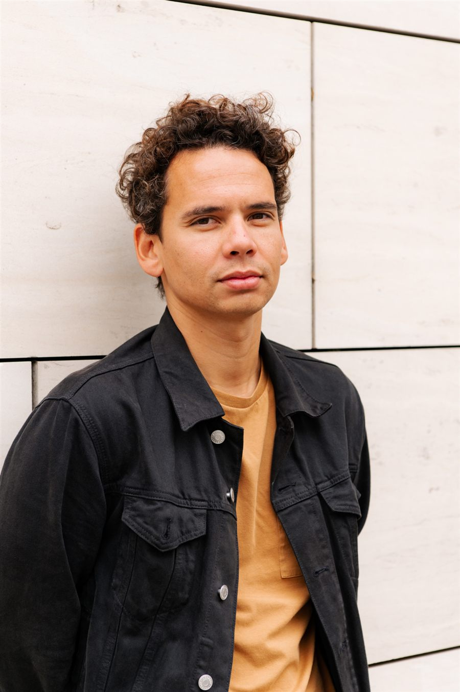
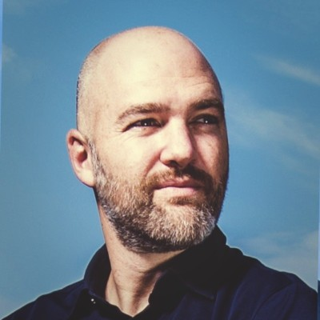

Who you work with
A core that stays. A network that flexes.
Executxr isn't a fixed team you hire and keep paying for. It's a core that stays constant, and a network of specialists we bring in exactly as far as your programme calls for. Never more, never a bench sitting idle on your invoice.
Profiles

Cederik Haverbeke
Founder & CEO
Cederik builds and runs organizations at the intersection of immersive technology and organizational thinking. He is CEO of Hydra Experiencenet, Managing Director of XR Valley, the Belgian XR industry network, and founder of XR Venture Studio. He is the author of the NIM Framework, a body of work on how organizations structure and communicate, and speaks regularly on XR strategy at events like AWE (Augmented World Expo) and Advanced Engineering Belgium.
Profile on LinkedIn
Sam Versele
Senior Experience Advisor
Sam's background is in designing visitor experiences and heritage programmes for public and cultural institutions, with hands-on delivery of large-scale digital heritage projects and a track record building multilingual audience strategies for complex, expert-heavy content.
Profile on LinkedInBehind the scenes
The wider team
Behind every programme sits a small, constant core, plus the creative directors, programme managers, venue specialists and technical leads a project actually needs, drawn from a pool of collaborators we work with on a regular basis. You get the roles the programme requires, for as long as it requires them. Never a fixed team you carry between projects.
Meaning first. Then the programme. Then the medium.
Organizations are humanity's greatest invention, and also where the best ideas get lost between the people who understand them and the people who need to feel them. That gap is what we build for: not the technology first, but the meaning, then the programme, then the medium that fits.
XR Valley · Augmented World Expo · Advanced Engineering Belgium · referenced by the Flemish Parliament (Vlaams Parlement) as an external visitor-experience expert · ~30 tenders, €2.5M in experience-programme procurement.